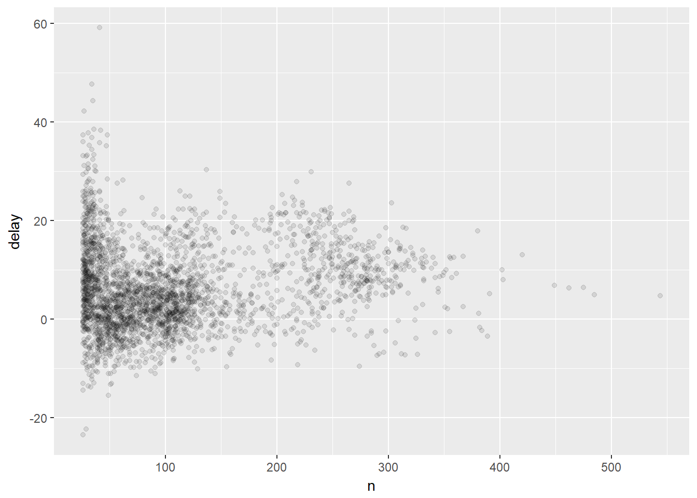

Unidade 10 Manipulando Dados
Neste capítulo vou adotar uma abordagem diferente do que fizemos quando introduzimos Gráficos em R. Na apresentação dos gráficos iniciamos pela biblioteca base e depois conhecemos o pacote ggplot2, que considero um muito mais que um aprimoramento para aqueles que desejam gráficos mais refinados, mas sim um pacote com todo um suporte conceitual de como criar visualizações dos seus dados de uma maneira sistemática e mais fácil.
Aqui vou iniciar utilizando pacotes que tornam a manipulação de dados mais fácil de ser compreentendida e implementada, pacotes que fazem parte de um grupo chamado de tidyverse. Tidyverse (???) é uma família de pacotes que compartilham uma mesma filosofia de uso e design para trabalharem juntos de forma harmônica.
David Robinson no seu Blog Variance Explained descreve por que prefere iniciar seus estudantes com tidyverse, o que acaba também corroborando com o fato de que a maioria do material de R disponibilizado na internet já usa essa filosofia.
Many teachers suggest I’m overestimating their students: “No, see, my students are beginners…”. If I push the point, they might insist I’m not understanding just how much of a beginner these students are, and emphasize they’re looking to keep it simple and teach the basics, and that that students can get to the advanced methods later….
My claim is that this is precisely backwards. ggplot2 is easier to teach beginners, not harder, and makes constructing plots simpler, not more complicated.
— David Robinson - Data Scientist.
E ele está citando ggplot2 porque esse pacote também é parte da família tidyverse. Um exemplo de como alguns dos pacotes de tidyverse podem ser combinados no workflow de análise de dados de pode ser visualizado na figura 10.1.
![Data Analysis Workflow recriado com alguns pacotes de **tidyverse** (Fonte:[@Gergana2017]).](figuras/tidyverse.png)
Figura 10.1: Data Analysis Workflow recriado com alguns pacotes de tidyverse (Fonte:(Gergana et al. 2017)).
Nosso foco neste capítulo será abordar a manipulação de dados usando o pacote Dplyr(Wickham et al. 2017).
10.1 Tibbles
Ao invés de trabalharmos com data frames usaremos aqui uma estrutura chamada tibble. Tibble nada mais é do que um data frames melhorado, mais flexível. Mas melhorado em termos de que? Bom, a definição formal da linguagem R aconteceu já faz um bom tempo, e a concepção de data frame elaborada naquela época, apesar de contínuar a atender os requisitos básicos para manipulação de tabelas, não é totalmente compatível com as inovações descobertas ao longo desses anos. Mudar um tipo básico como data frame poderia causar um caos na compatibilidade com o códigi já existente. Assim, algumas inovações foram inseridas em um tipo especial chamado tiblle, permitindo que os dados possam ser manipulados com mais flexibilidade sem quebrar a compatibilidade com o tipo data frames.
Tibbles são usados principalmente nos pacotes da família tydeverse, mas normalmente citados como se fossem data frames. Se vc deseja conhecer mais um pouco sobre tibbles, consulte livro R for Data Science de Garrett Grolemund e Hadley Wickham (Grolemund and Wickham 2016). Ou acesse vignette(“tibble”) no site CRAN-R
Uma das muitas vantagens de se usar tibbles ao se trabalhar com grandes bancos de dados, é que ao imprimir seus dados, apenas as serão imprssas as 10 primeiras linhas e as colunas que couberem no console.
Normalmente o tipo tibble é carregado junto com os pacotes família tydeverse, por exemplo o Dplyr.
##
## Attaching package: 'dplyr'## The following objects are masked from 'package:stats':
##
## filter, lag## The following objects are masked from 'package:base':
##
## intersect, setdiff, setequal, union10.1.1 Usando tibbles
Qualquer data frame pode ser convertido em tibble usando a função as_tibble().
as_tibble(iris)## # A tibble: 150 x 5
## Sepal.Length Sepal.Width Petal.Length Petal.Width Species
## <dbl> <dbl> <dbl> <dbl> <fctr>
## 1 5.1 3.5 1.4 0.2 setosa
## 2 4.9 3.0 1.4 0.2 setosa
## 3 4.7 3.2 1.3 0.2 setosa
## 4 4.6 3.1 1.5 0.2 setosa
## 5 5.0 3.6 1.4 0.2 setosa
## 6 5.4 3.9 1.7 0.4 setosa
## 7 4.6 3.4 1.4 0.3 setosa
## 8 5.0 3.4 1.5 0.2 setosa
## 9 4.4 2.9 1.4 0.2 setosa
## 10 4.9 3.1 1.5 0.1 setosa
## # ... with 140 more rows10.2 Dados
Os exemplos a seguir foram baseados nas vignettes de dplyr, que utiliza os dados nycflights13::flights que contém todos os vôos que partiram da cidade de Nova York(EUA) em 2013, disponibilizados pelo US Bureau of Transportation Statistics, e armazenados no pacote nycflights13.
Na verdade o pacote nycflights13 contém um extenso banco relacional que também pode ser usados para entender como manipular dados distribuídos em tabelas distintas em um banco relacional. (Consulte “Relacional Data” em Grolemund and Wickham (2016) para maiores informações).
10.2.1 Carregando os dados
Instale o pacote antes de carregar e observe que os dados flights já são armazenados como o tipo tibble e por isso são impressos de forma reduzida.
library(nycflights13)
dim(flights)## [1] 336776 19flights## # A tibble: 336,776 x 19
## year month day dep_time sched_dep_time dep_delay arr_time
## <int> <int> <int> <int> <int> <dbl> <int>
## 1 2013 1 1 517 515 2 830
## 2 2013 1 1 533 529 4 850
## 3 2013 1 1 542 540 2 923
## 4 2013 1 1 544 545 -1 1004
## 5 2013 1 1 554 600 -6 812
## 6 2013 1 1 554 558 -4 740
## 7 2013 1 1 555 600 -5 913
## 8 2013 1 1 557 600 -3 709
## 9 2013 1 1 557 600 -3 838
## 10 2013 1 1 558 600 -2 753
## # ... with 336,766 more rows, and 12 more variables: sched_arr_time <int>,
## # arr_delay <dbl>, carrier <chr>, flight <int>, tailnum <chr>,
## # origin <chr>, dest <chr>, air_time <dbl>, distance <dbl>, hour <dbl>,
## # minute <dbl>, time_hour <dttm>Para checar a estrutura dos dados use glimpse(), ou help(flights) para uma descrição das variáveis.
glimpse(flights)## Observations: 336,776
## Variables: 19
## $ year <int> 2013, 2013, 2013, 2013, 2013, 2013, 2013, 2013,...
## $ month <int> 1, 1, 1, 1, 1, 1, 1, 1, 1, 1, 1, 1, 1, 1, 1, 1,...
## $ day <int> 1, 1, 1, 1, 1, 1, 1, 1, 1, 1, 1, 1, 1, 1, 1, 1,...
## $ dep_time <int> 517, 533, 542, 544, 554, 554, 555, 557, 557, 55...
## $ sched_dep_time <int> 515, 529, 540, 545, 600, 558, 600, 600, 600, 60...
## $ dep_delay <dbl> 2, 4, 2, -1, -6, -4, -5, -3, -3, -2, -2, -2, -2...
## $ arr_time <int> 830, 850, 923, 1004, 812, 740, 913, 709, 838, 7...
## $ sched_arr_time <int> 819, 830, 850, 1022, 837, 728, 854, 723, 846, 7...
## $ arr_delay <dbl> 11, 20, 33, -18, -25, 12, 19, -14, -8, 8, -2, -...
## $ carrier <chr> "UA", "UA", "AA", "B6", "DL", "UA", "B6", "EV",...
## $ flight <int> 1545, 1714, 1141, 725, 461, 1696, 507, 5708, 79...
## $ tailnum <chr> "N14228", "N24211", "N619AA", "N804JB", "N668DN...
## $ origin <chr> "EWR", "LGA", "JFK", "JFK", "LGA", "EWR", "EWR"...
## $ dest <chr> "IAH", "IAH", "MIA", "BQN", "ATL", "ORD", "FLL"...
## $ air_time <dbl> 227, 227, 160, 183, 116, 150, 158, 53, 140, 138...
## $ distance <dbl> 1400, 1416, 1089, 1576, 762, 719, 1065, 229, 94...
## $ hour <dbl> 5, 5, 5, 5, 6, 5, 6, 6, 6, 6, 6, 6, 6, 6, 6, 5,...
## $ minute <dbl> 15, 29, 40, 45, 0, 58, 0, 0, 0, 0, 0, 0, 0, 0, ...
## $ time_hour <dttm> 2013-01-01 05:00:00, 2013-01-01 05:00:00, 2013...#help(flights)Vale frisar que os dados consideram que os três aeroportos de New York (JFK, LGA e EWR) funcionam como um hub, sendo os voos planejados para retornar de onde partiram.
Figura 10.2: Voos chegam no hub e retornam para o ponto de partida
10.3 Funções básicas
Funcões básicas disponibilizadas pelo pacote Dplyr para manipulação de dados:
filter()para selecionar registros específicos .arrange()para ordenar os registros segundo uma regra definida.select()erename()para selecionar variáveis baseado nos seus nomes.mutate()etransmute()para adicionar novas variáveis em função das já existentes.summarise()para condensar multiplos valores.sample_n()esample_frac()para a abtenção de amostras aleatórias.
10.4 Filtrando registros (linhas)
O comando filter() permite que registros (linhas da sua tabela) possam ser selecionados de forma mais simples e prática. Como padrão em tidyverse, o argumento define o conjunto de dados.
Exemplos
filter(starwars, species == "Human")
filter(starwars, mass > 1000)
# Múltiplos critérios
filter(starwars, hair_color == "none" & eye_color == "black")
filter(starwars, hair_color == "none" | eye_color == "black")
# Múltiplos argumentos são equivalentes a "and/e"
filter(starwars, hair_color == "none", eye_color == "black")O filtro é usado de acordo com os operadores booleanos abaixo:
![Operadores booleanos usados em `filter()`. **x** representa o círculo esquerdo e **y** o círculo direito, e a área sombreada a selação. (Fonte:[@Grolemund2016]).](figuras/operacoesLogicas.png)
Figura 10.3: Operadores booleanos usados em filter(). x representa o círculo esquerdo e y o círculo direito, e a área sombreada a selação. (Fonte:(Grolemund and Wickham 2016)).
Por exemplo, para selecionar todos o voos do dia 01 de Janeiro:
filter(flights, month == 1, day == 1)## # A tibble: 842 x 19
## year month day dep_time sched_dep_time dep_delay arr_time
## <int> <int> <int> <int> <int> <dbl> <int>
## 1 2013 1 1 517 515 2 830
## 2 2013 1 1 533 529 4 850
## 3 2013 1 1 542 540 2 923
## 4 2013 1 1 544 545 -1 1004
## 5 2013 1 1 554 600 -6 812
## 6 2013 1 1 554 558 -4 740
## 7 2013 1 1 555 600 -5 913
## 8 2013 1 1 557 600 -3 709
## 9 2013 1 1 557 600 -3 838
## 10 2013 1 1 558 600 -2 753
## # ... with 832 more rows, and 12 more variables: sched_arr_time <int>,
## # arr_delay <dbl>, carrier <chr>, flight <int>, tailnum <chr>,
## # origin <chr>, dest <chr>, air_time <dbl>, distance <dbl>, hour <dbl>,
## # minute <dbl>, time_hour <dttm>Exercícios:
- Crie uma variável contendo todos os voos que partiram nos meses de novembro e dezembro:
- Encontre os voos que não atrasaram (na partida ou chegada) por mais de duas horas:
10.4.1 Exercícios
- Encontre os voos que:
- possuem um atraso de chegada de duas ou mais horas
- Voaram para a cidade de Houston (IAH ou HOU)
- Foram operados pelas companhias United, American ou Delta Ailines
- Partiram no verão dos EUA (julho, agosto e setembro)
- Chegaram mais de duas horas atrasados, mas não decolaram atrasados.
- Partiram entre meia noite e as 06:00 (inclusive)
Outra opção para usar com o comando de filtro é a função
between(). Você poderia usá-lo para simplificar o código necessário para responder às queries anteriores?Quantos voos possuem valores ausentes em dep_time (NA)? Que outras variáveis estão ausentes? O que podem representar essas linhas com valores ausentes?
10.5 Organizando registros (linhas)
O comando arrange() é usado para organizar as linhas, que funciona de maneira similar à operação filtragem, exceto que aqui será alterada a ordem com que os registros (linhas) serão apresentados.
O default é usar a primeira coluna informada para a ordenação crescente, e as seguintes são usadas como uma chave adicional. .
Exemplo:
arrange(flights, year, month, day)No caso da ordenação ser decrescente, basta usar a função desc():
arrange(flights, year, month, desc(day))Vale a pena frisar que os valores ausentes sempre vão aparecer no final:
df <- tibble(x = c(5, 2, NA))
arrange(df, x)## # A tibble: 3 x 1
## x
## <dbl>
## 1 2
## 2 5
## 3 NAarrange(df, desc(x))## # A tibble: 3 x 1
## x
## <dbl>
## 1 5
## 2 2
## 3 NA10.5.1 Exercícios
Como aplicar
arrange()de modo que os valores ausentes apareçam no início? (Dica: useis.na()).Classifique os voos por ordem de atraso. E dentre esses os que partem mais cedo.
10.6 Selecionando variáveis (colunas)
O comando select() pode ser usado de diversas formas para selecionar apenas aquelas variáveis (colunas) interessantes para uma dada análise. Nesse caso, o novo conjunto de dados só conterá as colunas selecionadas.
Exemplos:
select(flights, year, month, day)
select(flights, year:day)
select(flights, -(year:day))10.6.1 Funções de apoio em select()
- “-” exclua da selação
- “:” Selecione a faixa (range)
- `contains()` Seleciona colunas que contenham no nome os caracteres(strings) definidos
- `starts_with()` Seleciona colunas que cujo nome iniciem com os caracteres(strings) definidos
- `ends_with()` Seleciona colunas que cujo nome sejam finalizados com os caracteres(strings) definidos
- `everything()` Seleciona todas as colunas
- `matches()` Seleciona colunas nas quais o nome atende a uma expressão
- `num_range()` Seleciona colunas nomeadas em uma sequência. [e.g. num_range("x", 1:5) para x1, x2, x3, x4, x5]
- `one_of()` Seleciona colunas cujo nome pertença a um grupoUse o help() para explorar essas funções!
Exemplos:
Seleciona todas as colunas exceto tailnum:
select(flights,-tailnum)Seleciona todas as colunas cujo nome contenha “time”:
select(flights,contains("time"))## # A tibble: 336,776 x 6
## dep_time sched_dep_time arr_time sched_arr_time air_time
## <int> <int> <int> <int> <dbl>
## 1 517 515 830 819 227
## 2 533 529 850 830 227
## 3 542 540 923 850 160
## 4 544 545 1004 1022 183
## 5 554 600 812 837 116
## 6 554 558 740 728 150
## 7 555 600 913 854 158
## 8 557 600 709 723 53
## 9 557 600 838 846 140
## 10 558 600 753 745 138
## # ... with 336,766 more rows, and 1 more variables: time_hour <dttm>Comunas também podem ser renomeadas com o select()
select(flights,year,carrier,destination=dest)## # A tibble: 336,776 x 3
## year carrier destination
## <int> <chr> <chr>
## 1 2013 UA IAH
## 2 2013 UA IAH
## 3 2013 AA MIA
## 4 2013 B6 BQN
## 5 2013 DL ATL
## 6 2013 UA ORD
## 7 2013 B6 FLL
## 8 2013 EV IAD
## 9 2013 B6 MCO
## 10 2013 AA ORD
## # ... with 336,766 more rowsA função everything() pode ser usada em conjunção com select() para reodenar as colunas.
select(flights, time_hour, air_time, everything())## # A tibble: 336,776 x 19
## time_hour air_time year month day dep_time sched_dep_time
## <dttm> <dbl> <int> <int> <int> <int> <int>
## 1 2013-01-01 05:00:00 227 2013 1 1 517 515
## 2 2013-01-01 05:00:00 227 2013 1 1 533 529
## 3 2013-01-01 05:00:00 160 2013 1 1 542 540
## 4 2013-01-01 05:00:00 183 2013 1 1 544 545
## 5 2013-01-01 06:00:00 116 2013 1 1 554 600
## 6 2013-01-01 05:00:00 150 2013 1 1 554 558
## 7 2013-01-01 06:00:00 158 2013 1 1 555 600
## 8 2013-01-01 06:00:00 53 2013 1 1 557 600
## 9 2013-01-01 06:00:00 140 2013 1 1 557 600
## 10 2013-01-01 06:00:00 138 2013 1 1 558 600
## # ... with 336,766 more rows, and 12 more variables: dep_delay <dbl>,
## # arr_time <int>, sched_arr_time <int>, arr_delay <dbl>, carrier <chr>,
## # flight <int>, tailnum <chr>, origin <chr>, dest <chr>, distance <dbl>,
## # hour <dbl>, minute <dbl>10.6.2 Exercício
- Como usar a função one_of(). Teste com:
vars <- c("year", "month", "day", "dep_delay", "arr_delay")10.7 Criando novas variáveis
O comando mutate() é um dos comandos mais utéis quando é necessário criar novas variáveis em função das já existentes. As novas variáveis(colunas) serão adicionadas no final.
Exemplo:
flights_sml <- select(flights,
year:day,
ends_with("delay"),
distance,
air_time
)
mutate(flights_sml,
gain = arr_delay - dep_delay,
speed = distance / air_time * 60
)## # A tibble: 336,776 x 9
## year month day dep_delay arr_delay distance air_time gain speed
## <int> <int> <int> <dbl> <dbl> <dbl> <dbl> <dbl> <dbl>
## 1 2013 1 1 2 11 1400 227 9 370.0441
## 2 2013 1 1 4 20 1416 227 16 374.2731
## 3 2013 1 1 2 33 1089 160 31 408.3750
## 4 2013 1 1 -1 -18 1576 183 -17 516.7213
## 5 2013 1 1 -6 -25 762 116 -19 394.1379
## 6 2013 1 1 -4 12 719 150 16 287.6000
## 7 2013 1 1 -5 19 1065 158 24 404.4304
## 8 2013 1 1 -3 -14 229 53 -11 259.2453
## 9 2013 1 1 -3 -8 944 140 -5 404.5714
## 10 2013 1 1 -2 8 733 138 10 318.6957
## # ... with 336,766 more rowsE as colunas recem criadas podem já ser usadas em novas expressões:
mutate(flights,
gain = arr_delay - dep_delay,
hours = air_time / 60,
gain_per_hour = gain / hours
)## # A tibble: 336,776 x 22
## year month day dep_time sched_dep_time dep_delay arr_time
## <int> <int> <int> <int> <int> <dbl> <int>
## 1 2013 1 1 517 515 2 830
## 2 2013 1 1 533 529 4 850
## 3 2013 1 1 542 540 2 923
## 4 2013 1 1 544 545 -1 1004
## 5 2013 1 1 554 600 -6 812
## 6 2013 1 1 554 558 -4 740
## 7 2013 1 1 555 600 -5 913
## 8 2013 1 1 557 600 -3 709
## 9 2013 1 1 557 600 -3 838
## 10 2013 1 1 558 600 -2 753
## # ... with 336,766 more rows, and 15 more variables: sched_arr_time <int>,
## # arr_delay <dbl>, carrier <chr>, flight <int>, tailnum <chr>,
## # origin <chr>, dest <chr>, air_time <dbl>, distance <dbl>, hour <dbl>,
## # minute <dbl>, time_hour <dttm>, gain <dbl>, hours <dbl>,
## # gain_per_hour <dbl>E se o interesse é manter apenas as novas colunas, use transmute():
transmute(flights,
gain = arr_delay - dep_delay,
hours = air_time / 60,
gain_per_hour = gain / hours
)## # A tibble: 336,776 x 3
## gain hours gain_per_hour
## <dbl> <dbl> <dbl>
## 1 9 3.7833333 2.378855
## 2 16 3.7833333 4.229075
## 3 31 2.6666667 11.625000
## 4 -17 3.0500000 -5.573770
## 5 -19 1.9333333 -9.827586
## 6 16 2.5000000 6.400000
## 7 24 2.6333333 9.113924
## 8 -11 0.8833333 -12.452830
## 9 -5 2.3333333 -2.142857
## 10 10 2.3000000 4.347826
## # ... with 336,766 more rowsA função mutate() aceita uma serie de operações para a criação de novas variáveis, o que é extremamente útil na contrução de modelos estísticos de previsão, ou mais específivamente no contexto chamado de feature engineering.
Além dos operadores aritméticos " +, - , *, /, ^ " (e.g. air_time/60), expressões com operadores lógicos e modulares %/% (divisão inteira) e %% (resto) podem ser utilizados (e.g. x == y * (x %/% y) + (x %% y) ). Funções agregadoras, entre outras, também podem ser empregadas (e.g. x/sum(x), y - mean(y) ).
10.7.1 Exercícios:
Compare air_time com (arr_time - dep_time). O resultado indica algum padrão? O que aconteceu com o resultado? Como corrigir?
Compare dep_time, sched_dep_time, and dep_delay. Qual é a relação esperada entre essas variáveis?
10.8 Sumarizando dados grupados
Trabalhar sobre dados grupados é uma das grande facilidades proprorcionadas pelo pacote Dplyr. Essa funcionalidade é disponibilizada pela função sumarise(), usada em conjunto com a função group_by().
Por exemplo, para calcular o atraso médio por dia:
by_day <- group_by(flights, year, month, day)
summarise(by_day, delay = mean(dep_delay, na.rm = TRUE)) #removendo os dados ausentes## # A tibble: 365 x 4
## # Groups: year, month [?]
## year month day delay
## <int> <int> <int> <dbl>
## 1 2013 1 1 11.548926
## 2 2013 1 2 13.858824
## 3 2013 1 3 10.987832
## 4 2013 1 4 8.951595
## 5 2013 1 5 5.732218
## 6 2013 1 6 7.148014
## 7 2013 1 7 5.417204
## 8 2013 1 8 2.553073
## 9 2013 1 9 2.276477
## 10 2013 1 10 2.844995
## # ... with 355 more rowsAntes de continuar, torna-se interessante introduzir um novo conceito, pipes. O uso de pipes, como veremos a seguir, pode tornar códigos complexos mais fácil de serem constrídos e lidos.
10.9 Pipes
Imagine que precisamos codificar o seguinte texto:
Batatinha quando nasce, esparrama pelo chão.
usando as seguintes funções:
- nasce(objeto) #"para criação do objeto"
- esparrama( objeto , lugar)Ficaríamos com algo do tipo:
batatinha <- nasce("batata")
esparrama(batatinha, "chão")Se quisermos montar uma cadeia de comandos poderíamos fazer:
esparrama(
nasce("batata"), "chão"
)Note que os comandos foram aninhados de de dentro para fora, de forma que a função mais interna é executada e seu resultado torna-se argumento para a função externa. Apesar deste processo não ser muito intuitivo, essa é a forma comumente usado em liguagens de programação.
Não seria melhor se pudéssemos escrever o código na mesma sequência da frase. É exatamente isso que o uso de pipes (%>%) proporciona:
nasce("batata") %>% esparrama("chão")Ao ler o código, Grolemund and Wickham (2016) sugere que %>% deve ser pronunciado como “então”. Eu particularmente prefiro “pipe” mesmo :)
Internamente, x %>% f(y) se transforma em f(x, y), e x %>% f(y) %>% g(z) gera g(f(x, y), z). Essa simples operação melhora sobremaneira a redigibilidade.
Usando os dados flights (exemplo em Grolemund and Wickham (2016)), poderíamos usar a função de summarise() para explorar a relação entre distância e atraso médio em função do destino, com dplyr, da seguinte forma:
by_dest <- group_by(flights, dest)
delay <- summarise(by_dest,
count = n(),
dist = mean(distance, na.rm = TRUE),
delay = mean(arr_delay, na.rm = TRUE)
)
delay <- filter(delay, count > 20, dest != "HNL")Usando um gráfico de pontos para investigar a relação, temos:
ggplot(data = delay, mapping = aes(x = dist, y = delay)) +
geom_point(aes(size = count), alpha = 1/3) +
geom_smooth(se = FALSE)## `geom_smooth()` using method = 'loess'
Podemos observar que os atrasos aumentam até a distância de ~750 milhas e depois decrescem. Provavelmente, voos mais longos permitem que os atrasos possam ser compensados no ar!
Os passos usados para preparar os dados foram:
1. `group_by()` para grupar os dados por destino.
2. `summarise()` para computar a distância, delay médio, e número de voos.
3. `filter()` para remover pontos expúrios(ruídos) e o aeroporto de Honolulu, cuja distância é quase o dobro da segunda maior.Ao usarmos pipes o código passa a ser escrito como abaixo e não há necessidade de um repositório intermediário de dados:
delays <- flights %>%
group_by(dest) %>%
summarise(
count = n(),
dist = mean(distance, na.rm = TRUE),
delay = mean(arr_delay, na.rm = TRUE)
) %>%
filter(count > 20, dest != "HNL")Ou mesmo, linkando o código com ggplot2:
flights %>%
group_by(dest) %>%
summarise(
count = n(),
dist = mean(distance, na.rm = TRUE),
delay = mean(arr_delay, na.rm = TRUE)
) %>%
filter(count > 20, dest != "HNL") %>%
ggplot(mapping = aes(x = dist, y = delay)) +
geom_point(aes(size = count), alpha = 1/3) +
geom_smooth(se = FALSE)10.10 Dados ausentes
O que aconteceria acima se os dados ausente não fossem removidos nas funções de agrupamento (na.rm=TRUE)?
Teste o comando:
flights %>%
group_by(year, month, day) %>%
summarise(mean = mean(dep_delay))Podemos também usar os dados ausentes para identificar os voos cancelados. Assim, esses voos seriam excluídos da nossa análise. Considere então que os voos não cancelados são aqueles que possuem de atraso (delay) na chegada e na saída. E para os voos cancelados um dos dados está ausente.
not_cancelled <- flights %>%
filter(!is.na(dep_delay), !is.na(arr_delay))10.10.1 Contando os NA
Uma boa prática é sempre investigar os número de observações(n()) ou o número de dados ausentes (sum(!is.na(x)))quando estamos usando funções agregadoras, pois as conclusões podem ser influenciadas por uma parcela pequena dos dados.
Considere novamente os dados referentes ao atraso dos voos não cancelados. Vamos considerar o atraso médio por aeronaves (identificadas por tailnum).
A função geom_freqpoly() plota a distribuição dos atrasos médios (delays$delay) usando uma linha.
delays <- not_cancelled %>%
group_by(tailnum) %>%
summarise(
delay = mean(arr_delay)
)
ggplot(data = delays, mapping = aes(x = delay)) +
geom_freqpoly(binwidth = 10)(Teste geom_histogram() e veja a diferença)
Podemos notar que existem atrasos médios de até 5 horas em alguns voos! Mas investigando melhor podemos ver como é a relação entre os atrasos médios (delay) e o número de voos.
delays <- not_cancelled %>%
group_by(tailnum) %>%
summarise(
delay = mean(arr_delay),
n = n()
)
ggplot(data = delays, mapping = aes(x = n, y = delay)) +
geom_point(alpha = 1/10)
Note que há grandes variações quando o número de voos é menor. O que pode ser explicado pelo fato de que nesses casos a média pode estar sendo altamente influenciada por outliers, e a amostra ainda não possui tamanho suficiente para estabilizar essa variação. (A aplicaçào de estatística bayesiana pode amenizar esse efeito, mas é assunto para outro tópico).
Vamos repetir o gráfico acima considerando somente os atrasos onde a média considerou mais de 25 voos.

10.11 Outros exemplos de funções agregadoras
- A média é uma medida (
mean()) bastante usada, mas medidas como a mediada (median(x)) pode dimunuir os efeitos dos outliers. - Subsetting significa usar um filtro nos valores das colunas e pode ser aplicado com
summarise().
not_cancelled %>%
group_by(year, month, day) %>%
summarise(
avg_delay1 = mean(arr_delay),
# Considere somente os atrasos (positivos)
avg_delay2 = mean(arr_delay[arr_delay > 0])
)- Medidas de dispersão como
sd(),IRQ()emad()(desvio absoluto em relação a média), sendo os dois últimos mais robustos em relação aos outliers.
# Algumas distância voadas variam mais dependendo do destino?
not_cancelled %>%
group_by(dest) %>%
summarise(distance_sd = sd(distance)) %>%
arrange(desc(distance_sd))- Medidas de posição:
first(x),nth(x, 2),last(x). Indicadas para retornor um dado elemento de um grupamento. Se a posição indicada não existir devolve um valor default (i.e. Ao tentar recuperar o terceiro elemento de uma lista de dois elementos).
not_cancelled %>%
group_by(year, month, day) %>%
summarise(
first_dep = first(dep_time),
last_dep = last(dep_time)
)- Ou até mesmo combinar
summarize()comfilter()
popular_dests <- flights %>%
group_by(dest) %>%
filter(n() > 365) # mais de um voo por dia
popular_destsO RStudio disponibiliza uma folha de resumo para pacotes Dplyr e Tidyr (Data Wrangling Cheatsheet - RStudio).
Para conhecer mais consulte o livro R for Data Science de Garrett Grolemund e Hadley Wickham (Grolemund and Wickham 2016).
References
Gergana, John, Francesca, Sandra, and Isla. 2017. “Working efficiently with large datasets.” https://ourcodingclub.github.io/2017/03/20/seecc.html.
Wickham, Hadley, Romain Francois, Lionel Henry, and Kirill Müller. 2017. Dplyr: A Grammar of Data Manipulation. https://CRAN.R-project.org/package=dplyr.
Grolemund, Garrett, and Hadley Wickham. 2016. “R for Data Science.” http://r4ds.had.co.nz/.